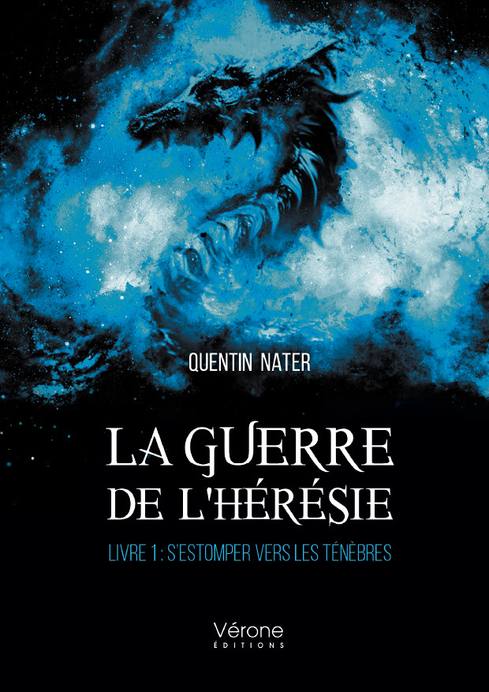
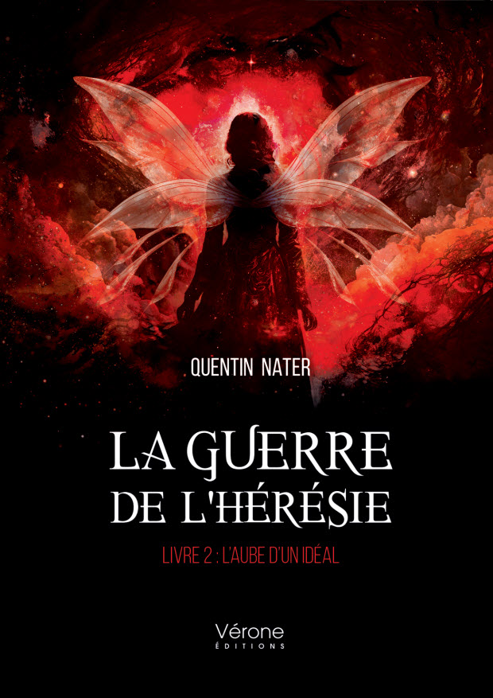
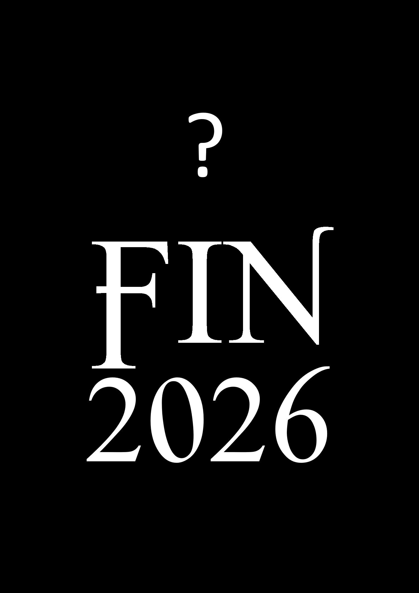
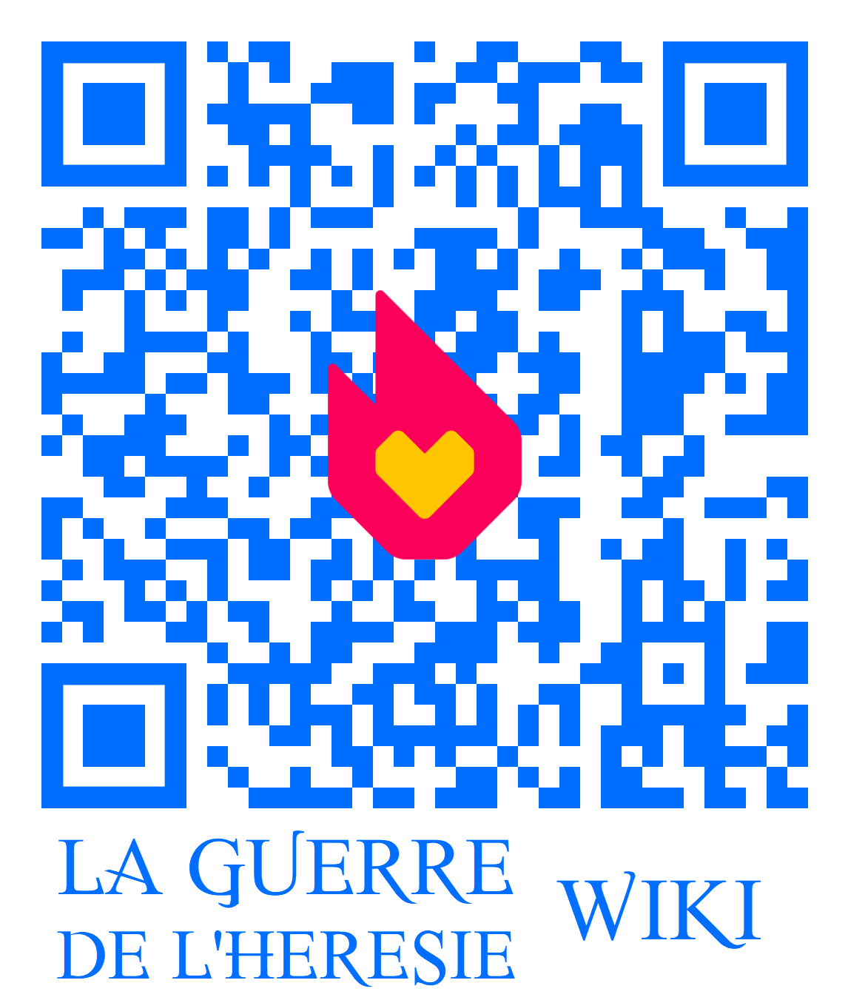
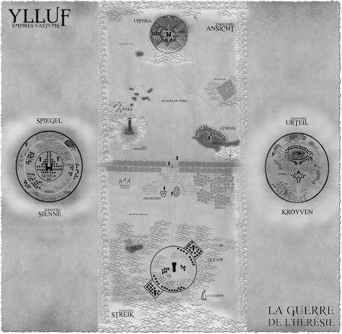
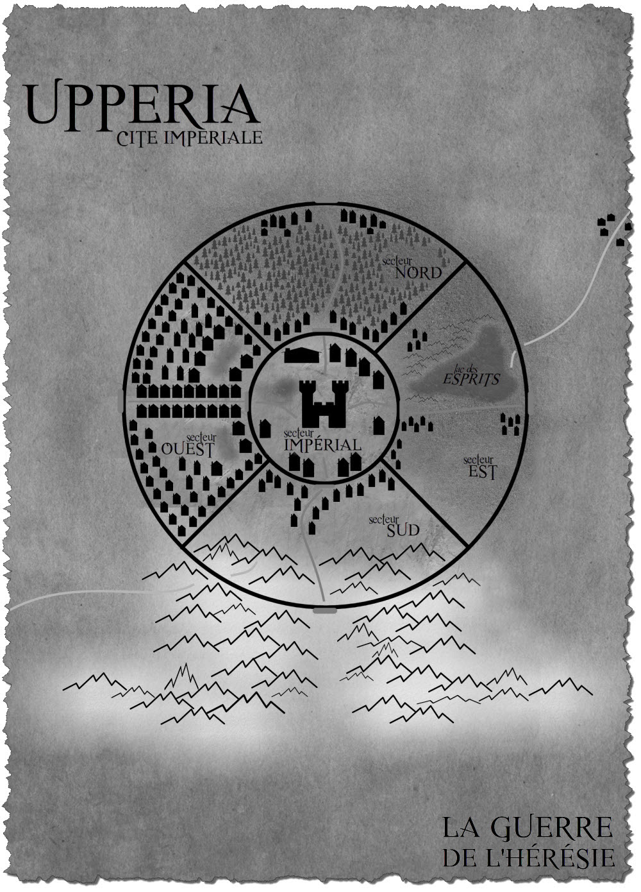
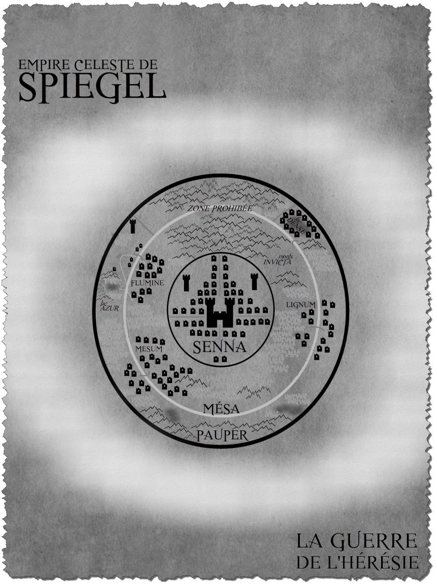
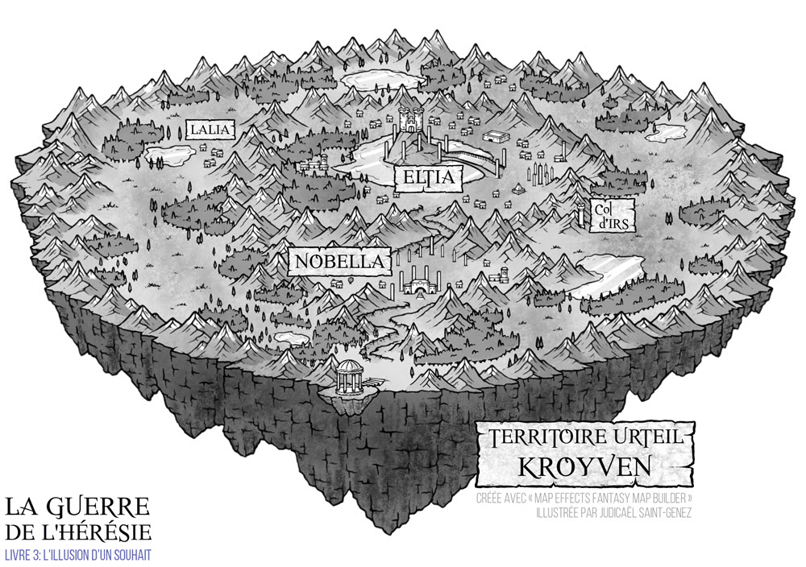
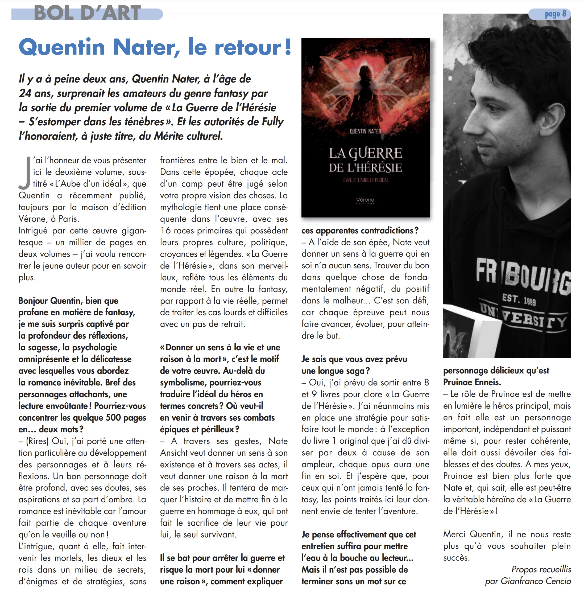
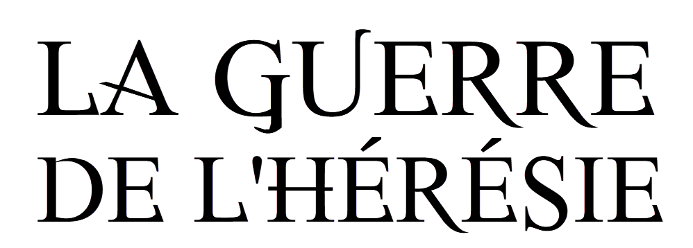

 |
La guerre de l'hérésie - Livre 1 : S'estomper vers les TénèbresDans des temps immémoriaux, seize rois régnaient sur l’univers. Un jour funeste, le souverain des Estars se proclama Dieu de la gravité et plongea ces temps de paix dans une guerre sombre. Après bon nombre de sacrifices, le roi maléfique des Estars fut vaincu et scellé dans la Sphère de l’Hérésie.
|
{kind=link}
 |
La guerre de l'hérésie - Livre 2 : L'Aube d'un Idéal« Donner un sens à la vie et une raison à la mort… »
|
{kind=link}
{kind=link}
|
 |
La guerre de l'hérésie - Livre 4 : L'Ordre de l'HérésieFin 2026... |
{kind=link}
Calendrier 2024 (cliquer pour afficher)
Calendrier 2024 de la Guerre de l'Hérésie
Dates |
Événements |
|
|---|---|---|
09/10 mars 2024 |
Marché médiéval, viking & fantastique, Fribourg, Suisse |
|
01 juin 2024 |
Salon du livre de Cormanon, Villars-sur-Glâne, Suisse |
|
01 août 2024 |
Kermesse du 1er Août, Verbier, Suisse |
|
10 août 2024 |
Vernissage Livre 3, Fully, Suisse |
|
13 au 16 septembre 2024 |
Arcana, Morges, Suisse |
|
12/13 Octobre 2024 |
Fête de la Chataigne, Fully, Suisse |
|
26/27 Octobre 2024 |
Destination Tokyo, St-Maurice, Suisse |
|
11 novembre 2024 |
Séminaire Fantasy et Littérature, Monthey, Suisse |
|
30 novembre et 1er décembre 2024 |
Fête médiévale de Vaulruz, Vaulruz, Suisse |
|
7/8 décembre 2024 |
Marché de Noël Bagn'Art, Châble, Suisse |
|
15 décembre 2024 |
Noël au village, Bouveret, Suisse |
|
Calendrier 2025 (cliquer pour afficher)
Calendrier 2025 de la Guerre de l'Hérésie
Dates |
Événements |
|
|---|---|---|
15/16 février 2025 |
Japan Impact, Lausanne (EPFL), Suisse |
|
08/09 mars 2025 |
Marché médiéval, viking & fantastique, Fribourg, Suisse |
|
29 juin 2025 |
Marché Artisanal Bouveret, Bouveret, Suisse |
|
19 juillet 2025 |
Marché médiéval Arbor, Combremont-le-Moyen, Suisse |
|
29-31 août 2025 |
La Fête du Livre, St-Pierre-de-Clages, Suisse |
|
19 au 22 septembre 2025 |
Arcana, Lausanne, Suisse |
|
11 au 12 octobre 2025 |
Fête de la Châtaigne, Fully, Suisse |
|
06 au 07 décembre 2025 |
Marché artisanal de Noël, Le Châble, Suisse |
|
Calendrier 2026 de la Guerre de l'Hérésie
Date |
Salon/Conv. |
Lien |
Location |
|
|---|---|---|---|---|
07/08 fév. 2026 |
Arbor: Marché médiéval, viking & fantastique |
lien |
Fribourg, Suisse |
|
14/15 fév. 2026 |
Japan Impact |
lien |
Lausanne (EPFL), Suisse |
|
11 avril 2026 |
Dédicaces: Librairie L’Entremonde |
lien |
Sion, Valais, Suisse |
|
25/26 avril 2026 |
L'Éveil de la Bâtiaz |
lien |
Martigny, Valais, Suisse |
|
août 2026 |
Marché du Coin de la Ville |
À venir |
Martigny, Valais, Suisse |
|
août 2026 |
Dédicaces: Zalactoree La Planète BD |
À venir |
Martigny, Valais, Suisse |
|
septembre 2026 |
Arcana |
À venir |
Lausanne, Vaud, Suisse |
|
Milieu/Fin 2026 |
Vernissage Livre 4 |
À venir |
Valais, Suisse |
|
Les Personnages
Lexique des noms officiel de la Guerre de l'Hérésie (par livre)
Vastums |
|
Ansicht |
|
Nate Ansicht |
Nate Ansicht, l'épéiste aux yeux d'argent, est le personnage principal de l'histoire. Dernier héritier de la lignée des Ansichts, il est considéré comme étant le Prince Maudit à la suite des événements qui sont arrivés à sa race. Il prendra les armes sous les bannières de l'armée Streik pour défier les Fantasmas. Son aventure sera tourmentée entre la lutte de ses idéaux et de la réalité. |
Streik |
|
Slicer Streik |
Fils de l'Empereur Streik, Slicer est un sabreur de la 4e Squada dans les rangs de l'armée impériale Streik. Princep sous les ordres de Prow Lear, il cherche à se débarasser de ses démons pour prouver sa valeur à son père. |
Prime Major des armées impériales, Ryvin Hydrs est le chef de l'armée Streik. Il dirige la 1er Squada, la plus puissante des escouades d'élite. Malgré ses origines modestes dans les bas-quartiers de Gleam, il est respecté par ses hommes grâce à sa maîtrise de l'espace. |
Ryvin Hydrs |
Dawn Dulcis |
Archère de la 4e Squada sous les ordres de Prow Lear. Originaire des terres Ansichts, la Princep se bat sous les couleurs de l'armée Streik. |
Empereur de la race de la Haine, Utteros Streik est le descendant de l'Ancêtre Originel des Streiks. Il règne sur l'intégralité des terres d'Ylluf depuis le massacre des Ansichts en l'an 4'999. |
Utteros Streik |
Arée Lazima |
Arée Lazima , nouveau Princep de la 4ème Squada, servira avec dévotion Nate Ansicht dans les rangs de la 4e Squada. Surnommée l'héritière des roses, cette Streik est un espoir dans les rangs des Princeps. Cependant, son caractère timide et réservé l'expose aux moqueries de certains de ses camarades. |
Sienne |
|
Pruinae Enneis |
Pruinae est une combattante Sienne de l'ordre de l'Apocalypsia. Second du Chevalier Blanc, Pruinae Enneis, aussi connue sous le nom de sylphide du lac Azur, manie les arts astraux. Elle se bat pour protéger son père et réaliser son rêve de vivre une vie simple. |
Nix Sieg est le Chevalier Blanc de la Conquête de l'Apocalypsia. Soldat Sienne, il est le manieur de Nebilis, l'Arc de Midrash. Le guerrier de glace suit une mission capitale qui mettra en péril la société Sienne. |
Nix Sieg |
Zekia Blut |
Zekia Blut est le Chevalier Rouge de l'Apocalypsia. Fils adoptif de l'Empereur Sienne, il dirige les armées de l'Apocalypsia d'une main de fer. Il mettra sa carrière en jeu pour sa lutte contre les Streiks. Le Prince Sienne manie Gladius l'épée de Midrash. |
Chevalier Noir de l'Apocalypsia, Faint est le manieur de Statora, la Balance de Midrash. Droit et noble, le Sienne, reconnu pour sa robustesse, manie la gravité. |
Faint Desabel |
Urteil |
|
Aizon Lowdel |
Aizon Lowdel est le chef des révolutionnaires, meneur des Starriest. Cet homme est le plus grand ennemi de l'Impératice Urteil et de l'Empire de la Sagesse. Malgré son passé lié à l'Empire et son jeune âge, Aizon Lowdel est respecté par les membres de la révolution et représente l'espoir ainsi que l'embrasement du peuple Urteil. |
Milobellia Vi Urteil, surnommée Mila par ses proches, est la Princesse de Kroyven et la fille de Noctalia Vi Urteil. Mila est liée à Aizon Lowdel qui a été son garde personnel depuis son enfance lorsque le Starriest était au service de l'Impératrice. |
Milobellia Vi Urteil |
Celarian |
Celarian est la commandante du Cercle des Urteils. Cette guerrière est une jeune femme tourmentée aux longs cheveux bruns, détentrice d’Erebus, une des deux sphères de pouvoir originelles qui est née du Chaos. |
Union Royale |
|
Alazia Hora |
Alazia Hora est la Reine du Temps, souveraine des Elfes. Elle dirige l'Union Royale, une union créée pour lutter contre les Dieux. |
Roi du Vent et souverain des Dragons, Rayza règne sur les cieux. Son âme est liée aux Ansichts depuis leur accord originel. |
Rayza |
Tenebris |
Tenebris est le Roi de l'Ombre, souverain des Hybrines. Il lia son destin à celui des Streiks. |
Reine des Plantes et souveraine des Fées, Ceaze est la plus belle des Fées et donc une des femmes les plus belles que les mondes ont portées. Son regard semble porté sur le Prince Maudit, Nate Ansicht. |
Ceaze |
Escouades Divines |
|
Omia |
Omia est le Roi des Dieux, souverain des Realtins et maître de la Réalité. Héritier des desseins de Nécro, il dirige les Escouades Divines dans sa lutte contre l'Union Royale |
Le Vespertilio est le Dieu de la Nuit, souverain des Vesps. Il est le Dieu responsable du massacre des Ansichts. Le Vespertilio est le seul Dieu à avoir été capable de s'échapper de l'illusion d'Omia et le seul à s'être retourné contre lui. |
Vespertilio |
Despair |
Le Despair est un Demi-Dieu, fils d'Omia, le Roi des Dieux. Il dirige les hordes des ténèbres, en tant qu'héritier des Realtins. |
Sillia est la Déesse de la Foudre, souveraine des Zoltres. |
Sillia |
Irilla |
Irilla est connue sous le nom d'enchanteresse de saphir. Irilla est une mystérieuse jeune femme aux longs cheveux noirs et aux yeux sombres avec des reflets de saphir qui possède un certain caractère. Elle cherche à tout prix un trésor plus précieux que sa vie elle-même. |
Plus de détails ? Plongez dans la fandom

Les Cartes
 |
YllufYlluf est le territoire des Vastums. Les Ansichts dirigent le nord, les Streiks le sud, les Siennes l'ouest et les Urteils l'est. |
 |
UpperiaCapitale du nord et des Ansichts, Upperia est la quintessence de l'Empire de la Peine, un bijou hérité des ancêtres qui marie le médiéval et l'antique. |
 |
SpiegelTerritoire des enfants de l'amour, Spiegel est un bastion céleste divisé en trois secteurs, le Pauper, le Mésa et le Senna. |
 |
KroyvenTerritoire des enfants de la sagesse, Kroyven est le bastion céleste des Urteils. (illustration : Judicaël St-Genez - Instagram) |
{kind=link}
{kind=link}
{kind=link}
{kind=link}
HERELIANDE, La Langue des Rois
La Guerre de l’Hérésie possède plusieurs langues propres à son univers :
le Pterian, la Langue des Fées, l’Héréliande, la Langue des Rois, la Sola, la Langue Universelle, ainsi que l’Yllufien, la Langue des Mortels.
Retrouvez ci-dessous un traducteur de l'Héréliande, une langue parlée par les divinités à travers les livres de La Guerre de l’Hérésie:
ADJECTIFS
26 entrées| Mot | Traduction |
|---|---|
| anz | noir |
| aérma | doux |
| cisato | piquant |
| eaze | vert |
| fal | loin |
| inae | rouge |
| inae | rubis |
| irill | bleu |
| irill | saphir |
| liehts | pauvre |
| lirne | fond |
| lirne | profond |
| lys | froid |
| metui | respecté |
| metui | aimé |
| odan | fidèle |
| riem | argenté |
| riem | faux |
| ryks | solide |
| ryks | dur |
| sill | délicat |
| upusal | spectral |
| vatar | puissant |
| we | blanc |
| wvil | fort |
| yas | pur |
PRONOMS
8 entrées| Mot | Traduction |
|---|---|
| ia | tu |
| néa | nous |
| ua | il |
| ua | elle |
| uas | ils |
| uas | elles |
| via | vous |
| éa | je |
DETERMINANTS
14 entrées| Mot | Traduction |
|---|---|
| ar | avec |
| doh | au |
| i | ton |
| is | tes |
| u | son |
| us | ses |
| x | un |
| x | une |
| xs | des |
| y | la |
| y | le |
| ys | les |
| é | mon |
| és | mes |
REGLES
3 entrées| Symbole | Règle |
|---|---|
| ' | accord |
| z | ne |
| – | , |
BASIQUES
21 entrées| Mot | Traduction |
|---|---|
| ard | vers |
| astums | tous |
| cor | comme |
| der | dans |
| fon | par |
| i | te |
| ifen | enfin |
| in | toi |
| lias | merci |
| metui | cher |
| mir | pareil |
| olh | de |
| olh | du |
| ora | après |
| orar | par-delà |
| owa | où |
| tau | et |
| uhe | que |
| uhe | seulement |
| é | me |
| én | moi |
NOMS
113 entrées| Mot | Traduction |
|---|---|
| ahis | artefact |
| ahis | sphère |
| ahis | trésor |
| ahis-sela | Sphère de l’Hérésie |
| aii | plaisir |
| alezie | éternel |
| alphard | origine |
| amia | présent |
| aria | futur |
| asmas | démon |
| astoria | la plus claire des étoiles |
| astoria | étoile |
| atiese | prince |
| aturia | roi |
| aélia | héritier |
| bah | bain |
| caer | château |
| cea | sorcière |
| cea | magie |
| deon | souverain |
| deon | empereur |
| devo | vide |
| devorh | trou |
| doimh | cité |
| elia | enfant |
| elw | épée |
| elwen | épéiste |
| enor | ciel |
| ereus | vérité |
| ereus | réalité |
| erium | énergie |
| erium | puissance |
| eru | divinité |
| erun | héros |
| esabel | serviteur |
| esax | escouade |
| esil | protection |
| feeis | fée |
| fhains | honneur |
| freea | glace |
| gid | nuage |
| gid | brume |
| heara | eau |
| her | langue |
| hialga | temps |
| hirdire | justice |
| ibus | bien |
| ibus | droit |
| idear | perpétuel |
| ihnte | vent |
| ihntia | amour |
| ihntia | pardon |
| immia | certitude |
| imper | détenteur |
| imper | maître |
| iredra | temple |
| ires | larmes |
| irilla | illusion |
| irilla | rêve |
| irs | mort |
| javas | travail |
| kyor | gardien |
| laud | hiver |
| lazias | la plus sombre des nuits |
| lazias | nuit |
| liem | traître |
| lirium | sylphide |
| llia | foudre |
| lmine | rivière |
| lya | nom |
| lyr | vie |
| maloyw | légende |
| maloyw | histoire |
| mereus | mensonge |
| messress | tristesse |
| meum | réserve |
| mila | calme |
| mir | identique |
| nate | destin |
| neacht | désert |
| neacht | sable |
| omias | guide |
| oria | lumière |
| oyven | paradis |
| res | vache |
| res | gibier |
| riem | argent |
| sacrilen | sacrifice |
| secrum | secret |
| sela | hérésie |
| sela | affront |
| silda | ami |
| silda | compère |
| stigmate | pouvoir |
| uax | union |
| ulgur | loup |
| unwe | yeux |
| upus | fantôme |
| upus | spectre |
| vell | poison |
| vespia | lune |
| vols | tempête |
| volus | monstre |
| waed | sang |
| ween | roche |
| wek | souterrain |
| wen | automne |
| wvil | mine |
| ygg | arbre |
| zias | ténèbres |
| zisht | passé |
| éliande | sacré |
VERBES
23 entrées| Mot | Traduction |
|---|---|
| 'a | avoir |
| 'aihan | montrer |
| 'al | pouvoir |
| 'astums | unir |
| 'celar | regarder |
| ‘dess | appeler |
| 'dis | tracer |
| 'dis | guider |
| 'esil | protéger |
| 'esme | danser |
| 'héend | ordonner |
| 'ihntia | aimer |
| 'irdis | bénir |
| 'kirihe | mourir |
| 'lorwen | revoir |
| 'lorwen | retrouver |
| 'merhilas | rencontrer |
| 'orihas | ouvrir |
| 'res | devoir |
| 's | être |
| 'ves | venir |
| 'ysil | cacher |
| 'ysil | se cacher |
L'Auteur
BiographieQuentin Nater est titulaire d'une licence en Informatique de l'Université de Science Appliquée de l'Ouest de la Suisse et suit des études de neurosciences à l'Université de Fribourg.
|
Journal
Journal de Fully 2023 - Livre 1
Lien de l'articleJournal de Fully 2024 - Livre 2
Lien de l'article{kind=link}

Votre Contribution
Soyez la prochaine personne à contribuer à la visibilité de la Guerre de l'Hérésie en donnant votre avis sur les plateformes en ligne, un grand merci !
ISBN-13 : 9791028419165
ASIN : B0B6N3QT27
